Thank you for purchasing my work. If you have any questions that are beyond the scope of this help file, please feel free to email via my user page contact form here (in the sidebar). Thanks so much!
Corporate X is a responsive multipurpose theme for creating "content flexible" Drupal 7 websites in minutes. It's built over the most recent and recommended Drupal version: 7.12, so you can start from a "scratch brand new base" on building a long term support solution for your clients. Drupal Team currently recommends Drupal 7 due to the advance of its community modules above later versions, 1 year after its initial release, and this is one of Corporate X's highest features. You can browse the theme demo at Corporate X v 2.0 Demo. It's extremelly easy to install, something like the "Next, next, next ..." way :D .
A fully responsive layout allows Corporate X to addapt to your visitor's devices, no matter what they're using: iPhone, Android, Smartphones, Tablet, iPad or a common Desktop Computer. You can test it by opening the demo presented at Corporate X v 2.0 Demo and resizing your browser. Following are a set of previews of how the demo will be seen from different devices:
Corporate X includes an awesome contextual content edition interface(red tags on content) in each one of the Views it contains. You won't need to teach clients how to find a content they would like to change. Just find where it's being visualized and edit it. Each role on your site can see only the contextual editing options as you define them on the Drupal's Permission module.
The Item also includes sample content (text + media) for each content type, so you only need to edit it using contextual edition instead of having to create it from scratch and it's much easier to have it fully working in 5 minutes. An old phrase says "It is much easier to edit, than create" and that's what you'll got with Corporate X, instead of a blank template. Everything you see on the screnshots, is what you'll get, but the sample images, due to copyright reasons.
Corporate X also includes an advanced theme editing interface, where you can edit every color on your screen by using a color picker. 16 base colors palettes will help you to get a start point for your theme, but you can also customize as much as you want.
In the Home Page, Corporate X includes an advanced jQuery slideshow with over 27 configurable effects you can use to show your slides. Most relevant included jQuery effects are:
Corporate X contains a lot of SEO best practices. It uses, in every View & Content Page, semantically valid HTML code and CSS so search engines can index them easily. Headlines are where they should be (h1, h2, h3, h4 etc) depending on the View hierarchy. It helps Search Engines like Google & Yahoo, to "understand" the ranking of your content inside your pages, even when the boots that rank pages, are just computers. Resuming, Corporate X provides an internal SEO feature that will allow you to place your content online and get it on high ranking probabilities.
Don't forget to rate this theme if you like it. All ThemeForest visitors and users will appreciate it.
Corporate X package includes a detailed documentation that allow you to get started installing the theme, the whole Drupal 7.12 project, how to customize your theme and many other technical details for advanced theme developers interested on extending it. You can read it here. As an overview, documentation summary includes:
Documentation also includes screenshots, graphics & code fragments for specific topics.
Following are the modules included on the packagge. You won't need to add any other one to get it working. Once installed, you can extend it as you do with any other Drupal site:
I provide support for any theme/item related question or doubt (I’m currently working on GMT -5 so please, be patient for my response) so if you have any, please mail me via the contact form titled “Email jagutierrez” at the bottom of the right sidebar of my profile page.
General Support was moved to doublemthemes.com since January 25, 2012. You can also place your questions here if you're a verified purchaser.
Corporate X is created over an installation profile, so you don't need to do much to get it working. Following steps will guide you trough the installation process.
1. Extract corporate_x_(VERSION).zip file on your web server. It includes all you need to get it working, so don't worry about any other files handle.
The location of your installation depends on the kind of server you're using. I mention some examples here you may be:
Once you extract it, it will be located on a folder called "corporate_x". You can change it and place your new theme name there.
2. Using a Web Browser, navigate to your folder/domain/subdomain where the extracted corporate_x's folder was created.. I'll use as example the name "corporate_x" due to the default folder. It would be on "http://localhost/corporate_x" in case you installed it locally or "http://yourdomain.com/corporate_x" in a remote installation.
3. Select Corporate X as your installation profile on the "Select an installation profile" page and then click "Save and Continue".
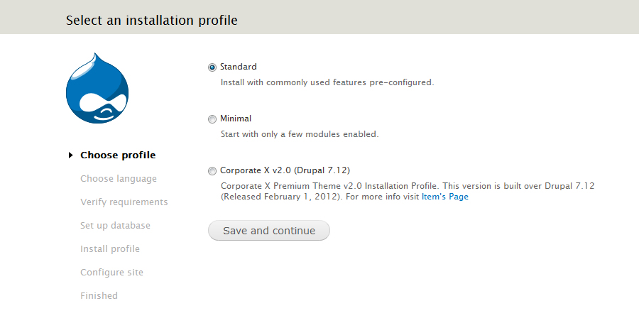4. Select your language on the "Choose language" page and then click "Save and Continue" by default, the theme is English Based.
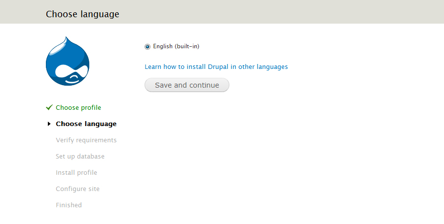5. Setup your database info on the "Database configuration" page and then click "Save and Continue". If you haven't created it yet, do it via phpMyAdmin or any other MySQL configuration app. Once you continue, the installation process will begin. Please, be a little bit patient.
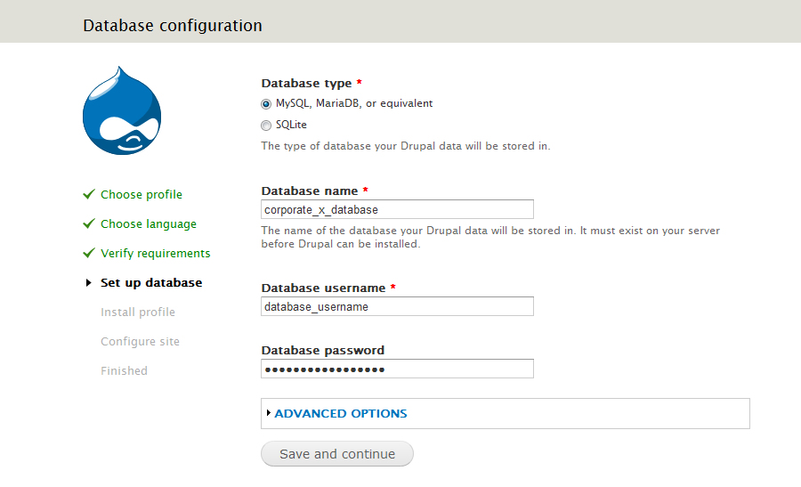6. Configure your site basic info on the "Configure Site" page and then click "Save and Continue". Wait a little bit, until all Corporate X features are configured.
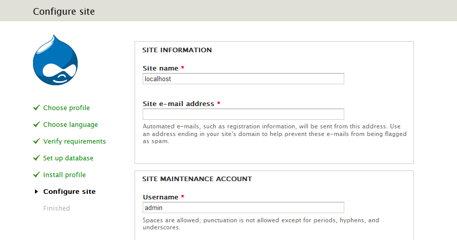7. Congrats, there's your purchase. Ejnoy it, and most of all, check out the red tags :D. I would really appreciate you give it an overview and rate it on Themeforest.
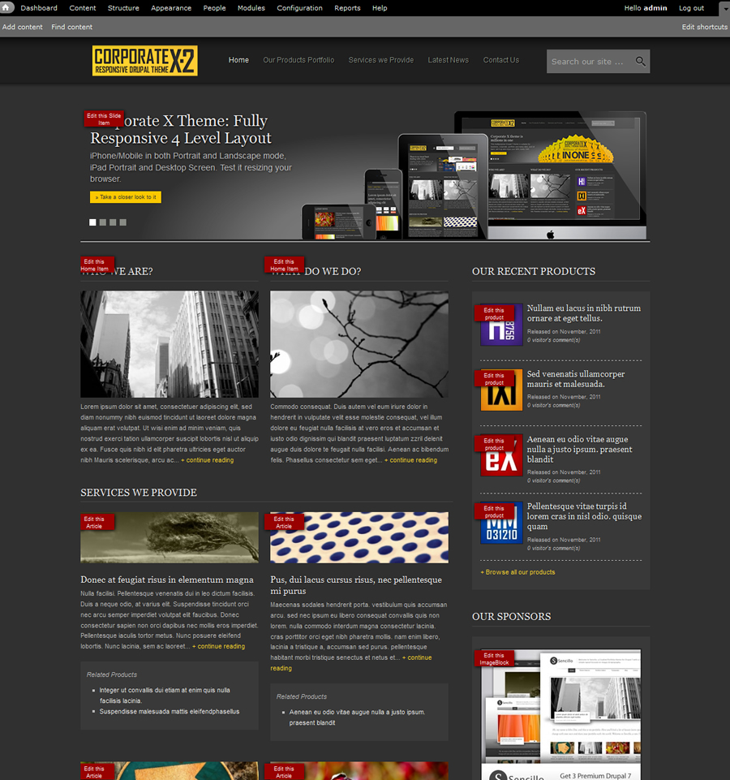Site appearance is the most important part of your theme. If you want to change it, follow these steps:
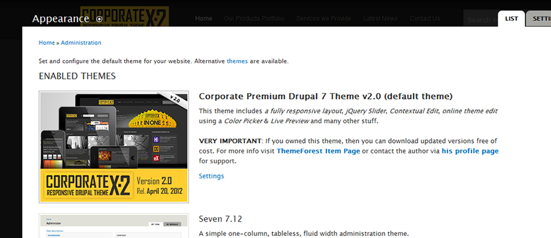1. Browse to http://yourdomain.com/corporate_x/?q=admin/appearance/settings/corporate or go to Site Appearance on the Drupal 7 administration menu and click Appearance and then Settings on Corporate X theme.
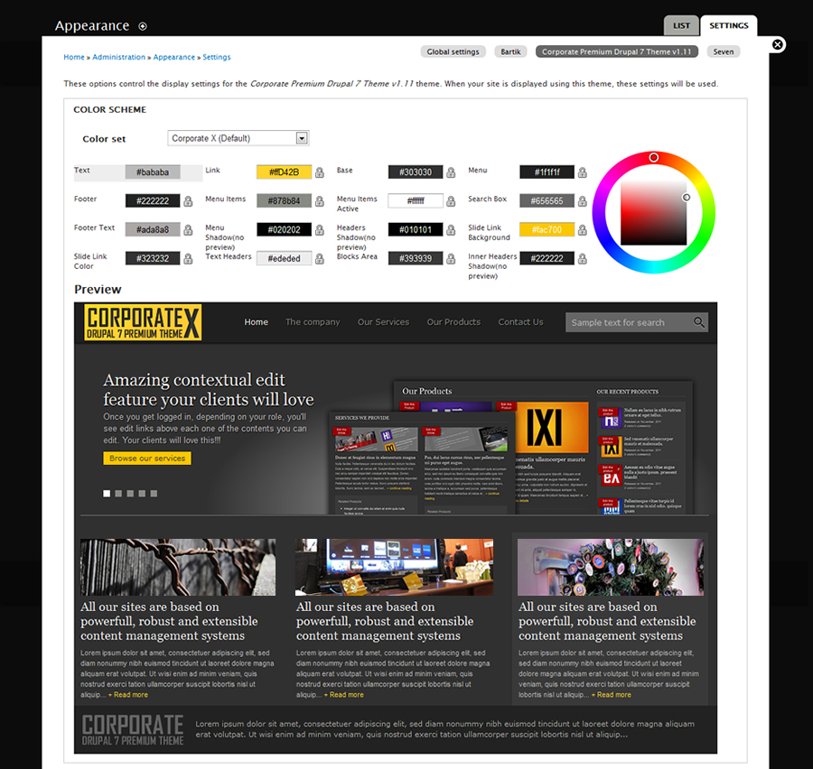2. Once there, you have your own "Photoshop Style" Theme editor. 6 Color sets are a good start point, but you can change whatever you want. Once you finished Click "Save Configuration".. It's done.
You can also copy the HEX color from another source and paste it directly on the color box. IMPORTANT: Remember you must save theme settings for get colors updated.
This is one of the first things you'll want to do when you have Corporate X installed. Here I show you how:
As Corporate X is a responsive theme, is considered a good practice to use different logos for Desktop and Mobile devices. Corporate X has 2 sample logos you can replace with your own. Is very important to respect the sample sizes, due to layout balance.
The PNG files with the logos are:
If you resize your browser. you'll see the difference between them.
For replacing them with your own, you only need to browse the folder "/sites/all/themes/news_center and there you'll find both files. It's done.
There's also another way of changing ONLY the "logo.png" file. You have to follow these steps:
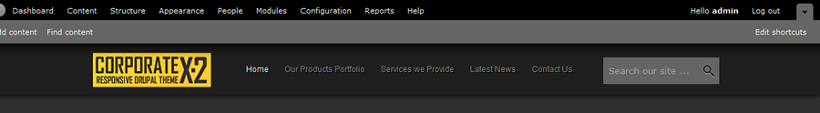1. Browse to http://yourdomain.com/corporate_x/?q=admin/appearance/settings/corporate Scroll down to the section named "Logo image settings".
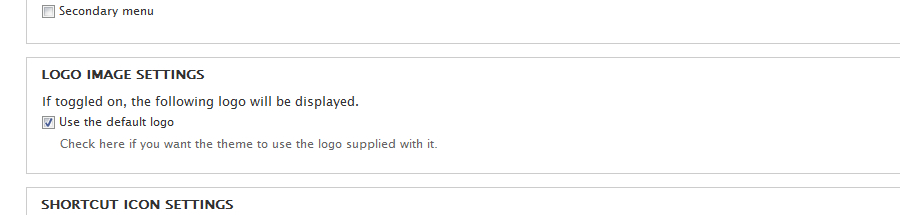2. Unset the checkbox called "Use the default logo".
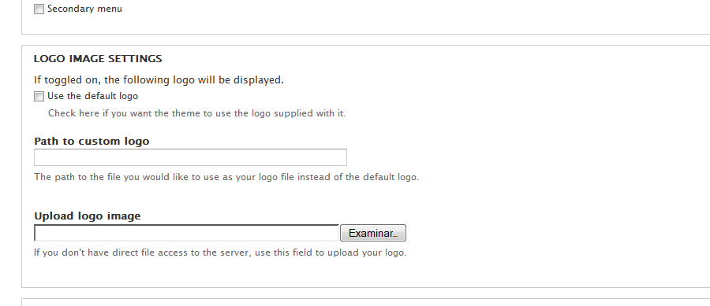3. Browse for your logo File locally . Once you find it, select it, and click Save Configuration at the bottom of the page. It will be uploaded to your webserver and will replace the default one. It's done.
You can quickly change jQuery effect on the Home Slide just by following these steps:
1. Browse to http://yourdomain.com/corporate_x/?q=admin/structure/views/nojs/display/jquery_slideshow/block_1/style_options and scroll down to the "Cycle Options" frame.
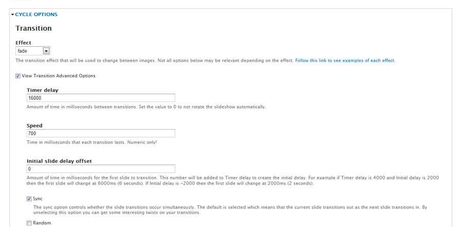2. Once there, you can select one of the available 27 effects, define the transition duration, the time between each effect, etc.
3. Click Apply at the bottom of the page. Then, you'll be redirected to the "Slideshow View Page". Be careful to not touch View Related preferences to avoid unstable results if you're not an advanced Drupal user.
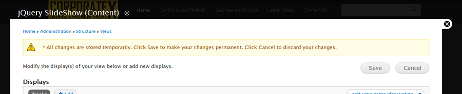3. Click Save button at the upper right part of the page. It's done.
As mentoned before, Corporate X includes 2 portfolios layouts. By default, the 2 columns is the recommended due to it's the most balanced. Anyway, you could replace it with the other. NOTE: Is highly recommended to keen navigation menu as clear as possible, it will help your site beeing more simple and focused on content. Although, dropdown navigation is supported, but is recommended to keep it in one level or two.
1. Browse to http://yourdomain.com/corporate_x/?q=admin/structure/menu/manage/main-menu and check out the Main Menu It has 2 hierarchies. The one for the sample porfolios and the one for the blog posts.
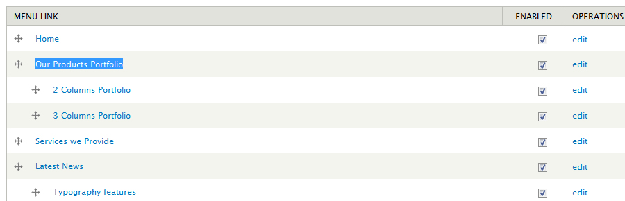2. Click on the EDIT link of the first level menu item named "Portfolio Gallery" .
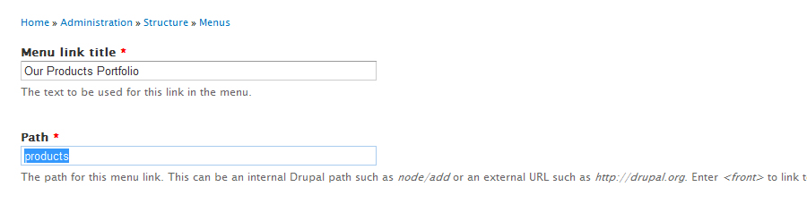3. Edit the "Path" with one of these: .
4. Then, click Save.
5. Once again on the menu screen, unset the checkboxes at the 2nd level menu items, so they won't show again. Then, click Save configuration. It's done.
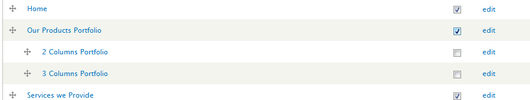Some text are included in some Views. Changing them requires only to use these links:
SERVICES WE PROVIDE
http://yourdomain.com/corporate_x/?q=admin/structure/views/nojs/config-item/home_page/attachment_1/header/area
LATEST NEWS
http://yourdomain.com/corporate_x/?q=admin/structure/views/nojs/config-item/home_page/attachment_4/header/area
Once there, you can change it. Then click "Apply" and then, "Save" the view.
Corporate X visual elements are very flexible. If you're an advanced theme developer or want to know how to extend it, you should read this:
Corporate X inherits all the layout files from Zen Base Theme for Drupal 7, but 2: page.tpl.php and html.tpl.php. Here's why:
The page.tpl.php file contains the main page layout for theme pages, including Views and content type's pages. I edited it to remove the default menu Zen has. It's much better to use it as a Block.
The html.tpl.php file uses the "double background" or "double body" technique, so the slide screen shows and behind it you can use any other background that integrates with it. It's something like this:
<body> <div id="corporate-header"> /* Content goes here */ </div> </body>
I'm using two CSS main files in this theme. Zen Base theme includes a lot more you can edit, but Corporate X Theme focus all its styles in 6 CSS files: the 4 used for responsive layout, corporate.css and color.css. Zen Base theme includes reset, base layout, browsers level up and many other features that aims to each Drupal visual element, so you don't need to define it in thousands of lines of code, just in these files I'm going to explain:
This is the main file. It includes all the layout adjustments elements and the views styles. If you use "only theme" you can clean views styles to optimize your CSS file sizes. It's divided in 2 big groups of styles: General Theme Styles & Views styles. Following are the sections of the file:
/* General Theme Styles */ /* Navigation Menu */ /* Views General Styles */ /* "Home Page" View Styles */ /* "Footer Blocks" Styles */ /* "Latest News" View Styles */ /* "Adds" Block Styles */ /* "Our Products" View Styles */ /* "Our Services" View Styles */ /* "Contact Us" View Styles */
This is the second file. colors.css includes all theme colors. VERY IMPORTANT: you can't edit this file directly. Changing values in the file will cause unstable behavior on the Color Edition Mode. You must go to the theme Appearance section /admin/appearance/settings/corporate and change colors there using the color picker. Theme will save changes for you and colors.css file will be copied to /sites/default/files/color/corporate. If you would like to make any further change, there is where you can, but this last approach is NOT RECOMMENDED. Using the Color Picker is the easiest and best way. If you want to set a specific color, define it on corporate.css
Corporate X's responsiveness CSS files are located at /sites/all/themes/corporate/css folder. They're all "section commented" so you can find each section easily. Following, the main CSS files of the theme and a comment with it's purpose:
/*
* News Center v1.0
* Media Layout for MaxDeviceWidth 320px
*
* This stylesheet works only on a 320px width device. i.e. an iPhone on Portrait mode.
*/
mobile-portrait-layout.css
/*
* News Center v1.0
* Media Layout for MaxDeviceWidth 480px
*
* This stylesheet works only on a 480px width device. i.e. an iPhone on Landscape mode.
*/
mobile-landscape-layout.css
/*
* News Center v1.0
* Media Layout for MaxDeviceWidth 768px
*
* This stylesheet works only on a 768px width device. i.e. an iPad on Portrait mode.
*/
tablet-layout.css
/*
* News Center v1.0
* Media Layout for MinDeviceWidth 960px
*
* This stylesheet works only on a minimal 960px width device. i.e. desktop Mac or PC.
*/
screen-layout.css
/*
* News Center v1.0
* General Layout & Theme Styles
*/
news_center.css
I've used the following images:
Once again, thank you so much for purchasing this theme. As I said at the beginning, I'd be glad to help you if you have any questions relating to this theme. No guarantees, but I'll do my best to assist. If you have a more general question relating to the items on Codecanyon, you might consider visiting the forums and asking your question in the "Item Discussion" section.
jagutierrez